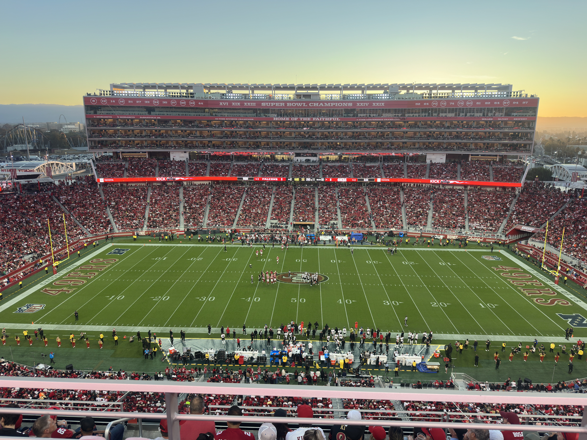

A Semana 6 da NFL 2026 terminou com três equipes ainda invictas, resultados surpreendentes em confrontos divisionais e mudanças importantes na classificação das conferências Americana e Nacional. A rodada, disputada entre 15 e 19 de outubro, teve 14 partidas e mostrou que a disputa pelas primeiras posições começa a ganhar contornos mais definidos.
O San Francisco 49ers continua sendo o grande destaque da temporada. A franquia venceu o Washington Commanders, chegou à sexta vitória consecutiva e permaneceu com a melhor campanha da NFL. O Kansas City Chiefs também confirmou sua força ao derrotar o Los Angeles Chargers por 22 a 6, enquanto o Minnesota Vikings manteve sua invencibilidade durante a semana de descanso.
Entre as principais surpresas, o Cleveland Browns venceu o Baltimore Ravens e provocou uma mudança na liderança da AFC North. O Tennessee Titans conquistou sua primeira vitória ao superar o Indianapolis Colts, e o Houston Texans derrotou o Jacksonville Jaguars em Wembley, Londres.
A rodada também ampliou a pressão sobre algumas equipes tradicionais. O Philadelphia Eagles sofreu sua quarta derrota consecutiva, desta vez diante do Carolina Panthers, enquanto o Dallas Cowboys perdeu para o Green Bay Packers. Já o Los Angeles Chargers chegou à sexta derrota em seis jogos.
O cenário apresenta mudanças importantes em relação à rodada anterior, cujo panorama completo está no balanço da Semana 5. A comparação ajuda a entender como as vitórias e derrotas recentes alteraram a disputa pelas lideranças divisionais.
Os três invictos depois da Semana 6
O San Francisco 49ers continua impressionando pela regularidade. A equipe comandada por Kyle Shanahan derrotou o Washington Commanders por 23 a 17 no Monday Night Football e alcançou a campanha de seis vitórias e nenhuma derrota.
O confronto começou com amplo domínio dos 49ers. San Francisco encerrou o primeiro tempo vencendo por 20 a 3, depois de produzir 303 jardas ofensivas contra apenas 90 de Washington.
Christian McCaffrey foi novamente decisivo, anotando dois touchdowns terrestres. George Kittle também teve participação importante, com cinco recepções, 69 jardas e um touchdown.
Entretanto, o segundo tempo mostrou que a invencibilidade não significa que a equipe não possa ter dificuldades.
Washington conseguiu diminuir uma desvantagem de 20 pontos e chegou a ameaçar a vitória dos 49ers. Jayden Daniels terminou com 300 jardas aéreas e dois passes para touchdown, mas a defesa de San Francisco conseguiu impedir a virada nas campanhas finais.
Malik Mustapha participou diretamente de uma das jogadas defensivas decisivas, interrompendo uma tentativa de quarta descida dos Commanders.
Outro acontecimento relevante foi a saída de Mike Evans, que sentiu o tendão de Aquiles durante o confronto. O recebedor acumulava 94 jardas quando deixou a partida.
Com o resultado, San Francisco chegou a 177 pontos marcados e 110 sofridos, estabelecendo saldo positivo de 67 pontos.
A franquia permanece isolada na liderança da NFC West e terá pela frente o Atlanta Falcons na Semana 7.
Kansas City Chiefs: Kenneth Walker comanda a quinta vitória
O Chiefs também manteve seu aproveitamento perfeito ao derrotar o Los Angeles Chargers por 22 a 6.
O resultado levou o Kansas City à campanha de 5-0 e ampliou a vantagem da franquia na AFC West.
O principal destaque ofensivo foi Kenneth Walker III. O running back terminou com 128 jardas terrestres em 19 corridas e marcou dois touchdowns, sendo responsável por grande parte da produção ofensiva da equipe.
A atuação também reforçou uma característica importante: a capacidade de vencer sem depender exclusivamente das jogadas aéreas de Patrick Mahomes.
A defesa de Kansas City foi determinante. Os Chiefs registraram quatro sacks e conseguiram limitar os Chargers a apenas seis pontos.
Justin Herbert voltou a encontrar dificuldades atrás de uma linha ofensiva desfalcada. Los Angeles produziu somente 73 jardas terrestres e não conseguiu transformar suas oportunidades em touchdowns.
A vitória colocou os Chiefs com 140 pontos marcados e apenas 83 sofridos em cinco jogos.
Mahomes continua sendo a principal referência de uma franquia acostumada a disputar títulos. Sua carreira e o impacto de suas conquistas estão detalhados na trajetória de seus títulos e premiações na NFL.
Na Semana 7, Kansas City enfrentará o Seattle Seahawks fora de casa, em um dos principais confrontos da rodada.
Minnesota Vikings: invencibilidade durante a folga
O Minnesota não entrou em campo na Semana 6, mas permaneceu entre os três invictos da temporada.
A equipe possui cinco vitórias em cinco partidas e continua liderando a NFC North.
Minnesota acumula 109 pontos marcados e somente 64 sofridos, números que demonstram a eficiência defensiva apresentada no início da campanha.
O time terá um confronto importante no retorno aos gramados. No domingo, 25 de outubro, receberá o Indianapolis Colts, buscando alcançar sua sexta vitória consecutiva.
As principais surpresas da Semana 6
Cleveland Browns vence e assume liderança da AFC North
Uma das maiores surpresas da rodada aconteceu em Cleveland.
O Browns derrotou o Baltimore Ravens por 13 a 10, em um confronto marcado pelo equilíbrio defensivo e decidido nos instantes finais. Baltimore chegou a abrir 10 a 0, mas não conseguiu preservar a vantagem.
A defesa dos Browns teve papel fundamental na reação, limitando os Ravens a 235 jardas ofensivas totais.
Um dos momentos decisivos aconteceu quando Carson Schwesinger provocou um fumble de Derrick Henry no último quarto, permitindo que Cleveland recuperasse a posse de bola e construísse a reação.
Já no encerramento da partida, Deshaun Watson encontrou Jerry Jeudy em uma jogada de 33 jardas que colocou os Browns em posição para o field goal decisivo. Andre Szmyt converteu o chute de 37 jardas nos segundos finais e garantiu a vitória.
Com o resultado, Cleveland chegou a quatro vitórias e duas derrotas, mesma campanha de Baltimore Ravens e Pittsburgh Steelers.
Entretanto, os Browns assumiram a primeira posição da AFC North pelos critérios de desempate, favorecidos pelas vitórias nos confrontos diretos contra os dois rivais.
A disputa da divisão promete ser uma das mais equilibradas da Conferência Americana.
Houston Texans vence o Jaguars em Londres
O confronto entre Houston Texans e Jacksonville Jaguars foi um dos mais emocionantes da sexta rodada.
Disputada no Wembley Stadium, em Londres, a partida terminou com vitória de Houston por 34 a 31.
C.J. Stroud foi o principal destaque dos Texans, completando 24 de 34 passes para 312 jardas e três touchdowns.
O quarterback encontrou boas alternativas ofensivas, principalmente com Nico Collins, Jaylin Noel e Foster Moreau.
Noel teve uma das atuações mais expressivas da equipe, acumulando 107 jardas em quatro recepções e anotando um touchdown.
Jacksonville também apresentou produção ofensiva importante.
Trevor Lawrence lançou quatro passes para touchdown, enquanto Travis Hunter apareceu como um dos personagens centrais da partida, contribuindo ofensivamente e conseguindo uma interceptação sobre Stroud.
O confronto chegou aos minutos finais empatado em 31 a 31.
Houston conseguiu avançar pelo campo e criou a oportunidade para Ka'imi Fairbairn converter o field goal da vitória quando o relógio chegou a zero.
O resultado foi especialmente importante porque representou a segunda vitória consecutiva dos Texans depois de quatro derrotas no começo da temporada. Jacksonville, por sua vez, permaneceu com quatro vitórias e duas derrotas.
Apesar do tropeço, os Jaguars continuam na liderança da AFC South e terão uma semana de descanso antes de retornar à competição.
Tennessee Titans conquista sua primeira vitória
Outra surpresa importante aconteceu em Indianapolis.
O Tennessee Titans derrotou o Indianapolis Colts por 26 a 20 e finalmente encerrou sua sequência de derrotas na NFL 2026.
O começo da partida não indicava uma recuperação fácil. Indianapolis abriu 13 a 0 no primeiro tempo, mas Tennessee conseguiu reagir com uma atuação defensiva decisiva.
Jeffery Simmons foi um dos principais nomes da vitória, registrando dois sacks e provocando um fumble de Jonathan Taylor.
A defesa também conseguiu interceptações, enquanto os times especiais participaram diretamente da recuperação dos Titans, incluindo um touchdown em um punt bloqueado.
O calouro Carnell Tate marcou seu primeiro touchdown na NFL, recebendo um passe de Cam Ward. Com o triunfo, Tennessee passou a ter campanha de 1-5.
A vitória encerrou uma sequência de seis derrotas consecutivas para Indianápolis e representou o primeiro resultado positivo de Robert Saleh como treinador principal dos Titans.
Apesar da recuperação, a equipe continua na última posição da AFC South e ainda precisa melhorar bastante sua produção ofensiva para aproximar-se dos demais integrantes da divisão.
Eagles sofre quarta derrota consecutiva
O Philadelphia Eagles continua vivendo um começo de temporada complicado.
A franquia foi derrotada pelo Carolina Panthers por 25 a 14 e chegou à quarta derrota consecutiva.
Depois de iniciar a NFL 2026 com duas vitórias, Philadelphia perdeu para Chicago Bears, Los Angeles Rams, Jacksonville Jaguars e Carolina Panthers.
Contra os Panthers, a equipe encontrou dificuldades principalmente na construção das campanhas ofensivas.
Com Jalen Hurts na lista de lesionados, Tanner McKee assumiu a posição de quarterback titular e completou 26 de 45 passes para 215 jardas e um touchdown.
Do outro lado, Bryce Young lançou para 281 jardas e dois touchdowns, enquanto Chuba Hubbard foi fundamental pelo chão, acumulando 120 jardas terrestres e um touchdown.
Carolina produziu 399 jardas totais e conseguiu controlar os momentos decisivos da partida.
A vitória levou os Panthers à campanha de 3-2 e manteve a equipe na liderança da NFC South.
Philadelphia caiu para 2-4 e terá um confronto divisional de grande importância contra o Dallas Cowboys na Semana 7.
Outros destaques da sexta rodada
- O Denver Broncos abriu a rodada com vitória por 17 a 14 sobre o Seattle Seahawks, na prorrogação. Wil Lutz converteu o field goal decisivo de 53 jardas, enquanto Ja'Quan McMillian conseguiu uma interceptação fundamental no período extra. Denver passou a ter campanha de 4-2.
- O Chicago Bears venceu o Atlanta Falcons por 31 a 23, com grande atuação de Caleb Williams. Depois de ficar afastado por lesão, o quarterback retornou e completou 30 de 36 passes para 305 jardas e um touchdown.
- O New England Patriots conquistou sua terceira vitória consecutiva ao superar o New York Jets por 26 a 19. Drake Maye encontrou Romeo Doubs, DeMario Douglas e Hunter Henry para touchdowns, ajudando a equipe a alcançar a campanha de 4-2.
- O New Orleans Saints derrotou o New York Giants por 34 a 27. Tyler Shough participou diretamente de quatro touchdowns, enquanto a defesa de New Orleans conseguiu quatro turnovers e cinco sacks.
- O Pittsburgh Steelers protagonizou uma das maiores reações da rodada ao vencer o Tampa Bay Buccaneers por 26 a 19 na prorrogação. Aaron Rodgers comandou a recuperação, e o calouro Germie Bernard marcou o touchdown decisivo no período extra.
- O Arizona Cardinals surpreendeu o Los Angeles Rams por 18 a 16. A curiosidade da partida foi que Arizona venceu sem marcar touchdowns: Chad Ryland converteu seis field goals, incluindo o chute decisivo no encerramento.
- O Buffalo Bills superou o Las Vegas Raiders por 33 a 30. Josh Allen lançou para 255 jardas e dois touchdowns, enquanto James Cook acumulou 153 jardas combinadas e um touchdown. Buffalo chegou à quinta vitória na temporada.
- Já o Green Bay Packers derrotou o Dallas Cowboys por 23 a 13 no Sunday Night Football. Jordan Love lançou para 276 jardas e um touchdown, além de marcar uma vez pelo chão. Foi a terceira vitória consecutiva dos Packers, que agora possuem campanha de 4-2.
Todos os resultados da NFL Semana 6:
- Denver Broncos 17 x 14 Seattle Seahawks
- Houston Texans 34 x 31 Jacksonville Jaguars
- Chicago Bears 31 x 23 Atlanta Falcons
- Cleveland Browns 13 x 10 Baltimore Ravens
- Tennessee Titans 26 x 20 Indianapolis Colts
- New England Patriots 26 x 19 New York Jets
- New Orleans Saints 34 x 27 New York Giants
- Carolina Panthers 25 x 14 Philadelphia Eagles
- Pittsburgh Steelers 26 x 19 Tampa Bay Buccaneers
- Arizona Cardinals 18 x 16 Los Angeles Rams
- Kansas City Chiefs 22 x 6 Los Angeles Chargers
- Buffalo Bills 33 x 30 Las Vegas Raiders
- Green Bay Packers 23 x 13 Dallas Cowboys
- San Francisco 49ers 23 x 17 Washington Commanders
Cincinnati Bengals, Detroit Lions, Miami Dolphins e Minnesota Vikings tiveram uma semana de descanso.
Como ficou a classificação da NFL após a Semana 6
Conferência Americana (AFC):
AFC East
- Buffalo Bills — 5 vitórias, 1 derrota
- New England Patriots — 4 vitórias, 2 derrotas
- New York Jets — 2 vitórias, 4 derrotas
- Miami Dolphins — 0 vitória, 5 derrotas
AFC North
- Cleveland Browns — 4 vitórias, 2 derrotas
- Pittsburgh Steelers — 4 vitórias, 2 derrotas
- Baltimore Ravens — 4 vitórias, 2 derrotas
- Cincinnati Bengals — 3 vitórias, 2 derrotas
AFC South
- Jacksonville Jaguars — 4 vitórias, 2 derrotas
- Indianapolis Colts — 2 vitórias, 4 derrotas
- Houston Texans — 2 vitórias, 4 derrotas
- Tennessee Titans — 1 vitória, 5 derrotas
AFC West
- Kansas City Chiefs — 5 vitórias, 0 derrota
- Denver Broncos — 4 vitórias, 2 derrotas
- Las Vegas Raiders — 3 vitórias, 3 derrotas
- Los Angeles Chargers — 0 vitória, 6 derrotas
Conferência Nacional (NFC):
NFC East
- New York Giants — 3 vitórias, 2 derrotas, 1 empate
- Philadelphia Eagles — 2 vitórias, 4 derrotas
- Dallas Cowboys — 2 vitórias, 4 derrotas
- Washington Commanders — 1 vitória, 4 derrotas, 1 empate
NFC North
- Minnesota Vikings — 5 vitórias, 0 derrota
- Green Bay Packers — 4 vitórias, 2 derrotas
- Chicago Bears — 4 vitórias, 2 derrotas
- Detroit Lions — 3 vitórias, 2 derrotas
NFC South
- Carolina Panthers — 3 vitórias, 2 derrotas
- Atlanta Falcons — 2 vitórias, 4 derrotas
- New Orleans Saints — 2 vitórias, 4 derrotas
- Tampa Bay Buccaneers — 1 vitória, 5 derrotas
NFC West
- San Francisco 49ers — 6 vitórias, 0 derrota
- Seattle Seahawks — 3 vitórias, 3 derrotas
- Arizona Cardinals — 2 vitórias, 4 derrotas
- Los Angeles Rams — 2 vitórias, 4 derrotas
Semana 7: todos os jogos, datas, horários e transmissões
A sétima semana da NFL 2026 será disputada entre 22 e 26 de outubro, com 14 partidas.
Todos os horários seguem o horário de Brasília.
Quinta-feira, 22 de outubro
- 21h15 — Chicago Bears x New England Patriots — ge tv
Domingo, 25 de outubro
- 10h30 — New Orleans Saints x Pittsburgh Steelers — ge tv
- 14h — Atlanta Falcons x San Francisco 49ers — NFL Game Pass
- 14h — Baltimore Ravens x Cincinnati Bengals — NFL Game Pass
- 14h — Carolina Panthers x Tampa Bay Buccaneers — NFL Game Pass
- 14h — Houston Texans x New York Giants — NFL Game Pass
- 14h — Minnesota Vikings x Indianapolis Colts — NFL Game Pass
- 14h — New York Jets x Miami Dolphins — NFL Game Pass
- 14h — Tennessee Titans x Cleveland Browns — NFL Game Pass
- 17h05 — Arizona Cardinals x Denver Broncos — NFL Game Pass
- 17h25 — Detroit Lions x Green Bay Packers — NFL Game Pass
- 17h25 — Las Vegas Raiders x Los Angeles Rams — NFL Game Pass
- 21h20 — Seattle Seahawks x Kansas City Chiefs — NFL Game Pass
Segunda-feira, 26 de outubro
- 21h15 — Philadelphia Eagles x Dallas Cowboys — ESPN, Disney+
Buffalo Bills, Jacksonville Jaguars, Los Angeles Chargers e Washington Commanders terão uma semana de descanso.
Os principais jogos da Semana 7 da NFL
O confronto entre Kansas City Chiefs e Seattle Seahawks será uma das principais atrações do domingo, 25 de outubro.
Kansas City chega invicto, com cinco vitórias, enquanto Seattle possui campanha de três vitórias e três derrotas.
O jogo será disputado com mando dos Seahawks e colocará frente a frente duas equipes que vivem momentos diferentes.
Os Chiefs apresentam uma das campanhas mais consistentes da temporada, com Kenneth Walker III sendo decisivo pelo chão e Patrick Mahomes comandando o ataque.
Seattle, por outro lado, precisa reagir depois de duas derrotas consecutivas.
Sam Darnold voltou a cometer erros importantes contra Denver, incluindo uma interceptação na prorrogação.
O principal desafio dos Seahawks será proteger melhor a posse de bola e impedir que Kansas City controle o ritmo da partida com seu jogo terrestre.
Para os Chiefs, a vitória representaria a sexta conquista consecutiva e a manutenção da liderança invicta da AFC West.
Confronto direto na NFC North
O duelo entre Packers e Lions terá impacto importante na disputa da conferência.
Green Bay chega com campanha de 4-2 depois de conquistar três vitórias consecutivas.
Detroit possui três vitórias e duas derrotas e retorna de uma semana de descanso.
Jordan Love atravessa um bom momento e voltou a ser decisivo na vitória sobre Dallas. A presença de Matthew Golden e Christian Watson amplia as alternativas do ataque aéreo dos Packers.
Detroit, por sua vez, possui uma das maiores produções ofensivas da NFC North, com 164 pontos marcados em cinco partidas.
O confronto terá importância especial pela proximidade entre as equipes.
Uma vitória dos Packers permitiria ampliar a vantagem sobre Detroit e continuar a perseguição ao Minnesota Vikings.
Para os Lions, vencer em casa significaria alcançar a quarta vitória e diminuir a diferença para os adversários que estão à sua frente na divisão.
Ravens pressionados após derrota
Baltimore Ravens e Cincinnati Bengals disputarão um confronto divisional de grande importância.
Baltimore chega com quatro vitórias e duas derrotas depois do tropeço diante de Cleveland.
Cincinnati retorna da semana de descanso com campanha de 3-2.
Os Ravens precisam recuperar a eficiência ofensiva apresentada em outros momentos da temporada. Contra os Browns, a equipe ficou limitada a apenas 10 pontos e perdeu a oportunidade de preservar uma vantagem construída no primeiro tempo.
Joe Burrow, por outro lado, terá a missão de liderar Cincinnati em uma partida que pode aproximar os Bengals das primeiras posições da AFC North.
A importância do confronto aumenta porque Cleveland e Pittsburgh também possuem quatro vitórias.
Caso os Ravens sejam derrotados novamente, poderão perder terreno em uma divisão na qual a diferença entre os quatro participantes permanece pequena.
Invencibilidade contra necessidade de recuperação
O San Francisco 49ers tentará conquistar sua sétima vitória consecutiva diante do Atlanta Falcons.
San Francisco possui a melhor campanha da NFL e chega motivado pelo triunfo sobre Washington. Atlanta, por sua vez, atravessa um momento de dificuldades, com duas vitórias e quatro derrotas.
A equipe perdeu para Chicago Bears por 31 a 23 na sexta rodada e continua buscando maior regularidade ofensiva.
Brock Purdy e Christian McCaffrey serão novamente referências importantes para o ataque dos 49ers.
Entretanto, a situação física de Mike Evans será acompanhada depois de sua saída durante o Monday Night Football.
Para Atlanta, o desafio será encontrar maneiras de pressionar Purdy e diminuir a eficiência do jogo terrestre de San Francisco.
A partida também será importante para avaliar como os 49ers respondem depois de quase permitirem uma virada dos Commanders no segundo tempo da Semana 6.
NFL chega à Paris
A Semana 7 terá um acontecimento histórico: a primeira partida de temporada regular da NFL disputada na França. Pittsburgh Steelers e New Orleans Saints se enfrentarão no Stade de France.
Pittsburgh chega com campanha de 4-2 depois de vencer Tampa Bay na prorrogação.
Aaron Rodgers será uma das principais atrações da partida, especialmente depois de comandar uma reação importante no último quarto do confronto anterior.
New Orleans também vem de vitória. A equipe derrotou o New York Giants por 34 a 27, com boa atuação ofensiva de Tyler Shough.
O duelo tem importância esportiva para as duas franquias.
Os Steelers tentam acompanhar Cleveland e Baltimore na disputa pela AFC North, enquanto os Saints buscam reduzir a distância para Carolina na NFC South.
Além do resultado, a partida representa mais um passo na internacionalização da NFL, que amplia sua presença no mercado europeu com a estreia de Paris no calendário da temporada regular.
Duelo de duas equipes pressionadas
O encerramento da Semana 7 colocará frente a frente duas franquias que precisam reagir imediatamente.
Dallas Cowboys e Philadelphia Eagles possuem campanhas idênticas de duas vitórias e quatro derrotas.
Philadelphia chega depois de quatro derrotas consecutivas, enquanto Dallas perdeu seus dois compromissos mais recentes.
Os Eagles precisam encontrar alternativas para melhorar a produção ofensiva diante das dificuldades provocadas pelas lesões do elenco.
O quarterback Tanner McKee comandou a equipe na derrota para Carolina, mas encontrou problemas contra a pressão defensiva adversária.
Dallas também precisa apresentar evolução.
Dak Prescott e o ataque dos Cowboys ficaram abaixo dos 20 pontos nas derrotas para Tampa Bay e Green Bay.
A partida terá impacto direto na classificação da NFC East.
Como o New York Giants lidera a divisão com campanha de 3-2-1, uma vitória permitirá ao vencedor se aproximar da primeira posição.
Já uma nova derrota aumentará significativamente a pressão sobre a equipe derrotada.
Partida de duas equipes em ascensão
O Thursday Night Football da Semana 7 será disputado entre New England Patriots e Chicago Bears.
As duas equipes chegam com campanhas de quatro vitórias e duas derrotas.
New England venceu seus três compromissos mais recentes e apresenta evolução ofensiva sob o comando de Drake Maye.
Chicago também ganhou confiança depois do retorno de Caleb Williams, que lançou para 305 jardas na vitória sobre Atlanta.
O confronto reúne dois quarterbacks jovens que assumiram protagonismo em suas respectivas franquias.
Para os Patriots, vencer significaria chegar à quinta vitória e manter a pressão sobre Buffalo na AFC East. Para os Bears, o resultado teria importância na perseguição ao Minnesota Vikings e na disputa direta com Green Bay dentro da NFC North.
Vikings defendem campanha perfeita
O Minnesota Vikings retorna à competição depois de descansar na Semana 6.
A equipe enfrentará o Indianapolis Colts, que chega pressionado pela derrota diante do Tennessee Titans.
Minnesota possui campanha de 5-0 e tentará alcançar sua sexta vitória consecutiva.
A defesa dos Vikings será novamente um dos principais pontos de atenção, depois de sofrer apenas 64 pontos nas cinco primeiras partidas.
Indianapolis, por sua vez, precisa reagir depois de duas derrotas consecutivas.
O quarterback Daniel Jones enfrentou dificuldades contra Tennessee, incluindo duas interceptações.
Para os Vikings, vencer será importante para manter a vantagem na NFC North, especialmente porque Green Bay e Chicago chegam à Semana 7 com quatro vitórias.
O que esperar da NFL depois das seis primeiras semanas
O primeiro reúne as equipes invictas. San Francisco 49ers, Kansas City Chiefs e Minnesota Vikings demonstraram capacidade de construir campanhas consistentes, mas ainda terão confrontos importantes antes de consolidarem suas posições na disputa pelos playoffs.
O segundo grupo apresenta equipes competitivas que continuam próximas das lideranças.
Entre esses times, a AFC North chama atenção pelo equilíbrio. Browns, Steelers e Ravens possuem campanhas idênticas, enquanto Cincinnati permanece próximo depois de cinco partidas.
Na NFC North, a invencibilidade dos Vikings será novamente colocada à prova, com Packers, Bears e Lions tentando diminuir a distância para a liderança.
Já na NFC South, o Carolina Panthers começa a transformar sua recuperação em vantagem concreta. A equipe lidera a divisão com campanha de 3-2, beneficiada também pelos resultados negativos dos adversários.
O terceiro grupo reúne as franquias que precisam reagir para evitar que o começo irregular comprometa suas ambições.
Philadelphia Eagles e Dallas Cowboys entram nesse cenário depois de chegarem à marca de quatro derrotas.
Los Angeles Rams, Indianapolis Colts e New York Jets também enfrentam dificuldades para construir campanhas positivas.
A situação mais preocupante permanece com Miami Dolphins e Los Angeles Chargers, as duas únicas equipes que ainda não venceram em 2026.
A Semana 7 poderá aprofundar essas diferenças.
Kansas City e San Francisco tentarão preservar suas campanhas perfeitas em confrontos fora de casa. Minnesota voltará aos gramados buscando manter a liderança da NFC North, enquanto Green Bay e Detroit disputarão um confronto direto importante na mesma divisão.
Na AFC North, Bengals e Ravens terão uma partida com consequências relevantes para a classificação, enquanto Pittsburgh tentará conquistar uma vitória histórica no primeiro jogo da NFL realizado na França.
O Monday Night Football entre Dallas Cowboys e Philadelphia Eagles também promete atenção especial, principalmente pelo momento de pressão vivido pelas duas franquias.
Depois de seis semanas, a temporada 2026 ainda oferece espaço para recuperação e mudanças importantes. Entretanto, os resultados recentes começam a mostrar quais equipes conseguiram transformar boas atuações em campanhas consistentes e quais precisarão encontrar soluções rapidamente.
A sétima rodada representa mais uma oportunidade de consolidar lideranças, interromper sequências negativas e aumentar a competitividade de uma temporada que já apresenta surpresas importantes nas duas conferências.